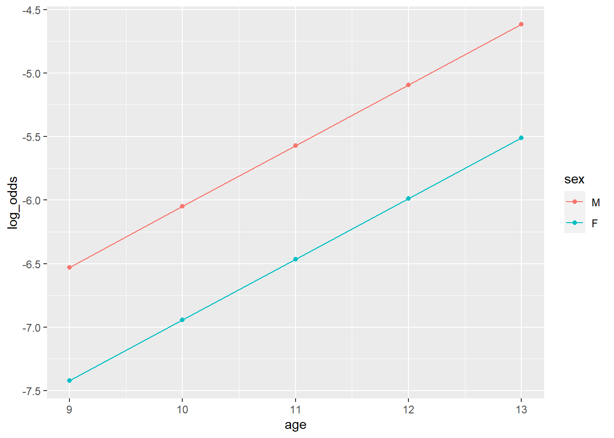
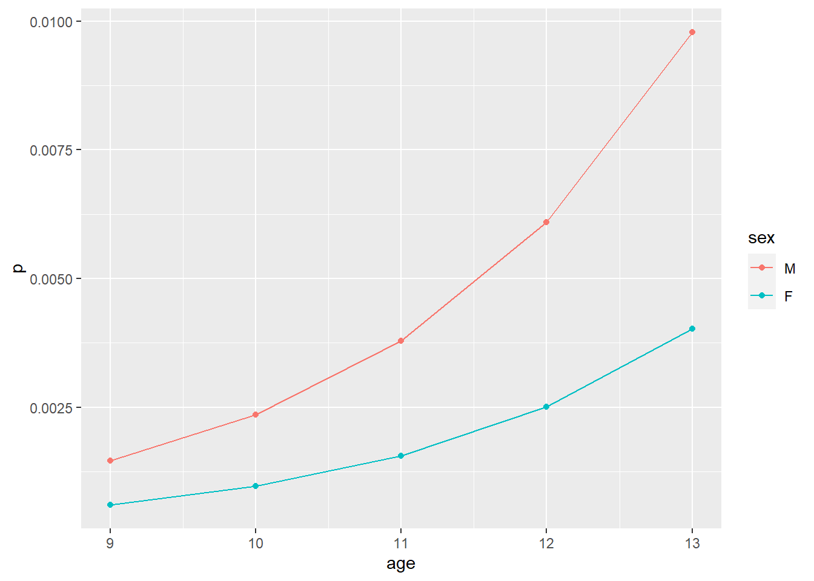

8 Logistic Regression
Starter code!
library(tidyverse)
df <- read_delim('data/abcd_lpksad01.txt') %>%
filter(row_number() != 1) %>%
type_convert()## Rows: 26744 Columns: 90
## -- Column specification --------------------------------------------------------------
## Delimiter: "\t"
## chr (90): collection_id, abcd_lpksad01_id, dataset_id, subjectkey, src_subject_id,...
##
## i Use `spec()` to retrieve the full column specification for this data.
## i Specify the column types or set `show_col_types = FALSE` to quiet this message.
##
## -- Column specification --------------------------------------------------------------
## cols(
## .default = col_double(),
## subjectkey = col_character(),
## src_subject_id = col_character(),
## interview_date = col_character(),
## sex = col_character(),
## eventname = col_character(),
## collection_title = col_character()
## )
## i Use `spec()` for the full column specifications.df <- df %>%
arrange(src_subject_id) %>%
select(
id = src_subject_id,
age = interview_age,
sex,
num_hosp = kbi_ss_c_mental_health_p_l,
grades = kbi_p_grades_in_school_l) %>%
group_by(id) %>%
arrange(age) %>%
mutate(
age = floor(age / 12),
sex = factor(sex, levels = c('M', 'F')),
time = row_number(),
n_timepoints = max(time)) %>%
ungroup() %>%
filter(time == 1) %>%
filter(grades %in% 1:5) %>%
select(id, age, sex, grades, num_hosp)
df## # A tibble: 9,727 x 5
## id age sex grades num_hosp
## <chr> <dbl> <fct> <dbl> <dbl>
## 1 NDAR_INV9XU9GFCB 9 M 1 0
## 2 NDAR_INV029PWCFY 9 M 1 0
## 3 NDAR_INV06DE9Y0L 9 M 1 0
## 4 NDAR_INV0BL9EL2Y 9 F 1 0
## 5 NDAR_INV13BCLD41 9 M 2 0
## 6 NDAR_INV1APPZYY8 9 F 1 0
## 7 NDAR_INV2B9KMD5C 9 F 1 0
## 8 NDAR_INV2RYEWWRN 9 M 1 0
## 9 NDAR_INV3NT6ML17 9 F 1 0
## 10 NDAR_INV5FKNM21M 9 F 1 0
## # ... with 9,717 more rowsdf <- df %>%
mutate(ever_hosp = num_hosp > 0)fit <- glm(
formula = ever_hosp ~ sex + age,
data = df,
family = 'binomial')
summary(fit)##
## Call:
## glm(formula = ever_hosp ~ sex + age, family = "binomial", data = df)
##
## Deviance Residuals:
## Min 1Q Median 3Q Max
## -0.1402 -0.0871 -0.0686 -0.0540 3.7269
##
## Coefficients:
## Estimate Std. Error z value Pr(>|z|)
## (Intercept) -10.8298 3.3850 -3.199 0.00138 **
## sexF -0.8932 0.4792 -1.864 0.06234 .
## age 0.4779 0.3146 1.519 0.12874
## ---
## Signif. codes: 0 '***' 0.001 '**' 0.01 '*' 0.05 '.' 0.1 ' ' 1
##
## (Dispersion parameter for binomial family taken to be 1)
##
## Null deviance: 311.95 on 9719 degrees of freedom
## Residual deviance: 305.73 on 9717 degrees of freedom
## (7 observations deleted due to missingness)
## AIC: 311.73
##
## Number of Fisher Scoring iterations: 9results <- fit %>%
broom::tidy() %>%
mutate(or = exp(estimate)) %>%
rename(b = estimate) %>%
mutate(across(where(is.numeric), .fns = ~ round(.x, 3)))
results## # A tibble: 3 x 6
## term b std.error statistic p.value or
## <chr> <dbl> <dbl> <dbl> <dbl> <dbl>
## 1 (Intercept) -10.8 3.38 -3.20 0.001 0
## 2 sexF -0.893 0.479 -1.86 0.062 0.409
## 3 age 0.478 0.315 1.52 0.129 1.61write_csv(results, 'logistic_results')predicted_vals <- fit %>%
broom::augment() %>%
select(sex, age, log_odds = .fitted) %>%
mutate(odds = exp(log_odds), p = odds/(1 + odds)) %>%
unique()
ggplot(predicted_vals, aes(x = age, y = log_odds, color = sex)) +
geom_point() +
geom_line()
ggplot(predicted_vals, aes(x = age, y = p, color = sex)) +
geom_point() +
geom_line()
df %>%
group_by(sex, age, ever_hosp) %>%
count()## # A tibble: 20 x 4
## # Groups: sex, age, ever_hosp [20]
## sex age ever_hosp n
## <fct> <dbl> <lgl> <int>
## 1 M 9 FALSE 190
## 2 M 10 FALSE 2317
## 3 M 10 TRUE 4
## 4 M 10 NA 3
## 5 M 11 FALSE 2272
## 6 M 11 TRUE 10
## 7 M 11 NA 1
## 8 M 12 FALSE 253
## 9 M 12 TRUE 2
## 10 M 12 NA 1
## 11 M 13 FALSE 8
## 12 F 9 FALSE 191
## 13 F 10 FALSE 2197
## 14 F 10 TRUE 4
## 15 F 10 NA 1
## 16 F 11 FALSE 2044
## 17 F 11 TRUE 2
## 18 F 11 NA 1
## 19 F 12 FALSE 211
## 20 F 13 FALSE 15read_abcd <- function(abcd_path){
suppressMessages({
abcd_path %>%
read_delim() %>%
filter(row_number() != 1) %>%
type_convert()
})
}
df <- list.files('data', pattern = 'abcd_', full.names = T) %>%
map(read_abcd) %>%
reduce(~ inner_join(.x, .y, by = c('subjectkey', 'interview_age')))